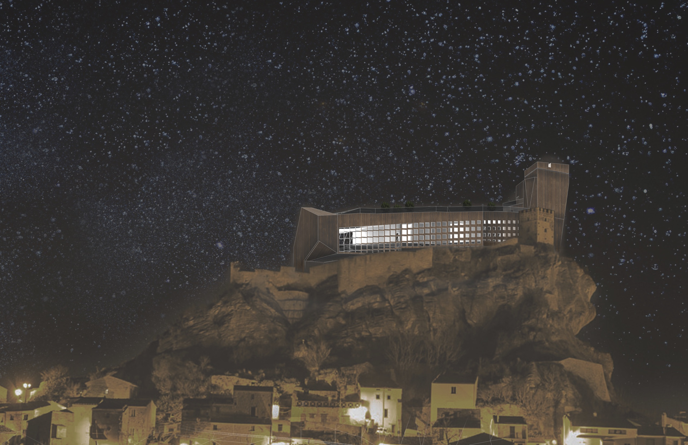
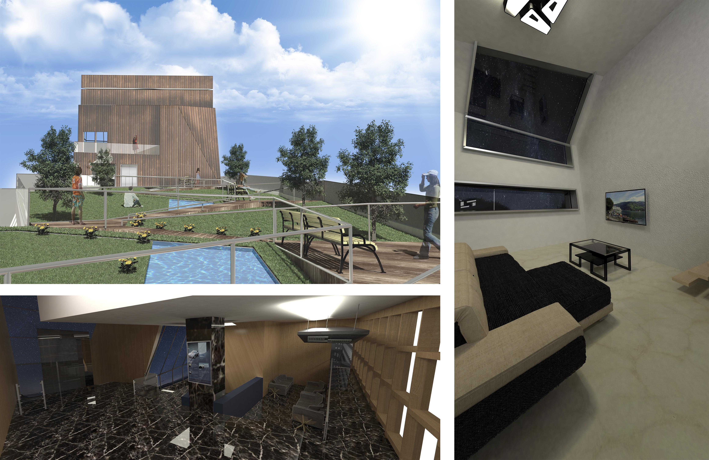
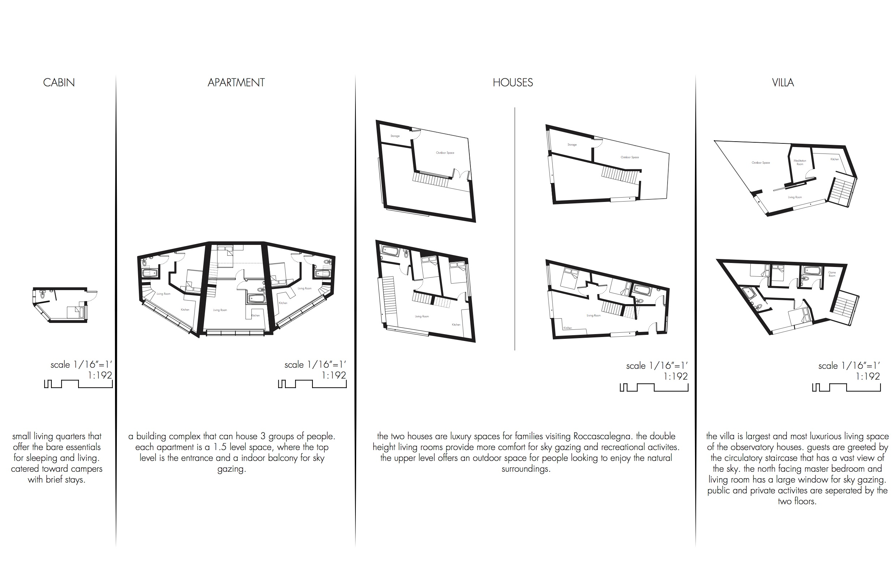
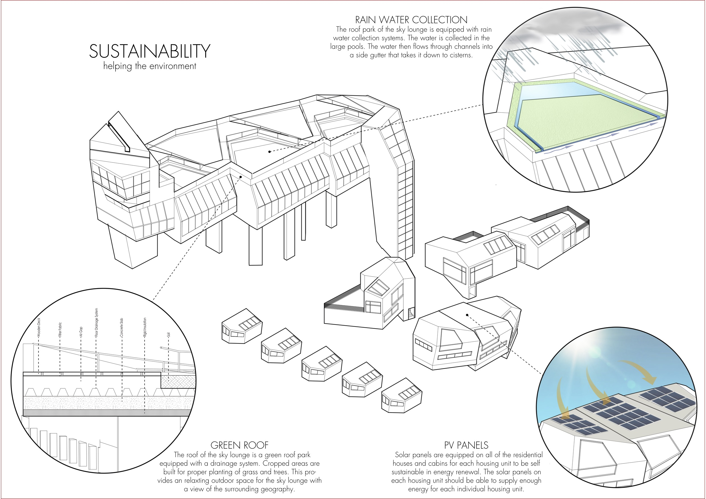
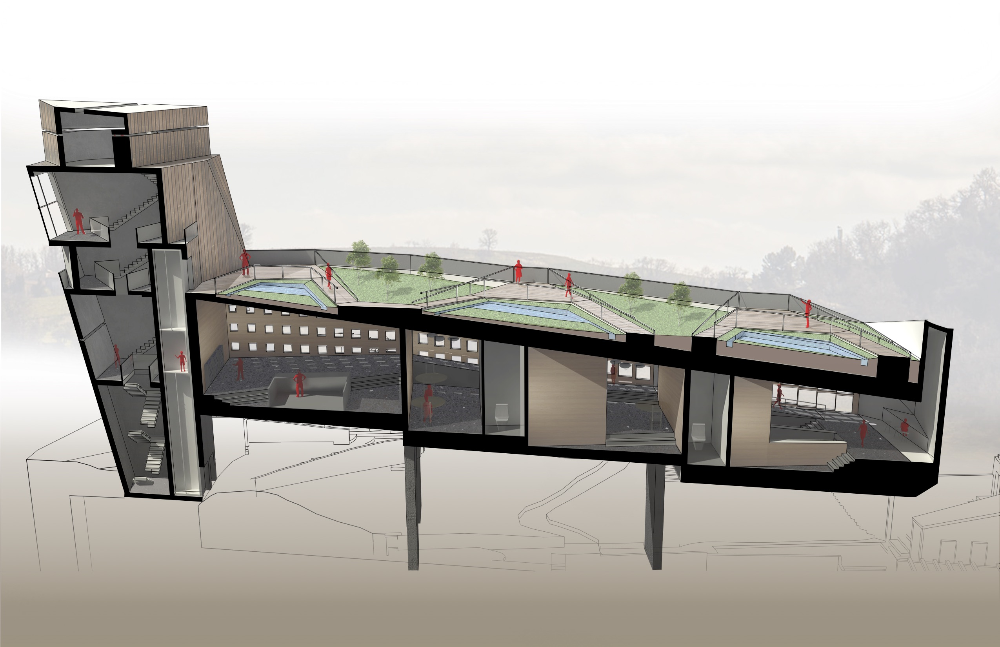

Ascendsion
Observatory Houses
Roll Studio | Young Architects Competition
ABOUT
The observatory addition to the ancient fortress serves as new terminal for the city of Roccascalegna. Since the focus is the observatory and the sky, the skylounge is elevated on top of the castle, literally becoming a part of the sky. The ascension also follows the slope of the mountain, making the building reach for the stars. Positioning the new buildings on the side of the mountains create optimal viewing angles for star gazing, but also opens the opportunity to make a new face for Roccascalegna. The layout establishes a new iconic facade for visitors, while maintaining the historic facade for the residents in neighboring villages. There was minimal intervention on the side that faces the village. On the backside, the observatory becomes a shadow to the existing castle, highlighting the importance of the historic site. While the nature of the addition drastically differs from the castle, the design implements details to integrate the new and old to minimize the contrast and avoid conflict in setting. The primary material is wooden cladding to emulate a natural setting despite the industrial form and geometry. Another advantage of wood is the lightness; the base and structure is concrete, but the building gets lighter as it gets taller. The green roof offers a natural space for visitors to enjoy the view at day or night. The roof replaces the green spaces removed for the building. New facilities, such rain water collection and solar panels are implemented to increase the environmental sustainability. The variety of living options are catered for different people; from the casual hiker to a visiting family. The entire complex creates a new neighborhood, where people coming to enjoy Roccascalegna can interact and be a part of a larger community. The individual buildings are separated for privacy, but the courtyard at the entrance of the area is a public space where people can gather and enjoy the beauty of nature. The interiors of all the living spaces offer a modern comfort and angled windows for the optimal view at the sky. This observatory not only creates a new tourist destination, but reestablishes the identity of Roccascalegna through the new face and community.
Renderings


drawings


